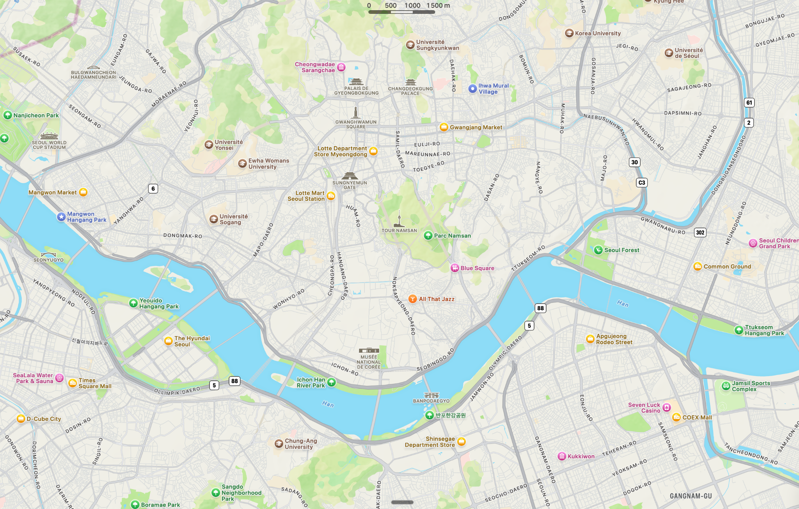

Tes spots validés à Séoul
Une sélection pensée selon tes goûts, avec maintenant une vraie liste des lieux à voir absolument pour ne rien manquer de Séoul.
—lieux affichés
—scores 95+
—spots dans ton secteur
Naverouverture directe
Chargement…
Aucun lieu ne correspond à ce filtre.

⭐ incontournables🍵 matcha / thé☕ cafés🍽️ restos💄 beauty🎨 culture🛍️ design🌅 sunset
Commence ici
Clique sur un emoji de la carte